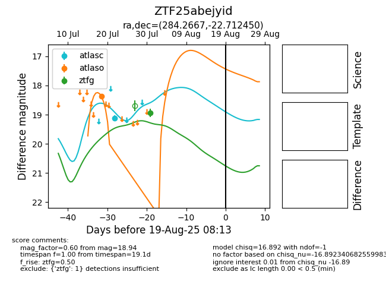

Target ZTF25abejyid at 2025-08-19 09:59, see:
FINK: fink-portal.org/ZTF25abejyid
Lasair: lasair-ztf.lsst.ac.uk/objects/ZTF25abejyid
ALeRCE: alerce.online/object/ZTF25abejyid
alt names
ZTF25abejyid (ztf,fink)
coordinates:
equatorial (ra, dec) = (284.2667,-22.71245)
galactic (l, b) = (13.0606,-11.31600)
photometry
last atlasc=19.11, atlaso=18.36, ztfg=18.94
1 atlasc, 1 atlaso, 1 ztfg detections
